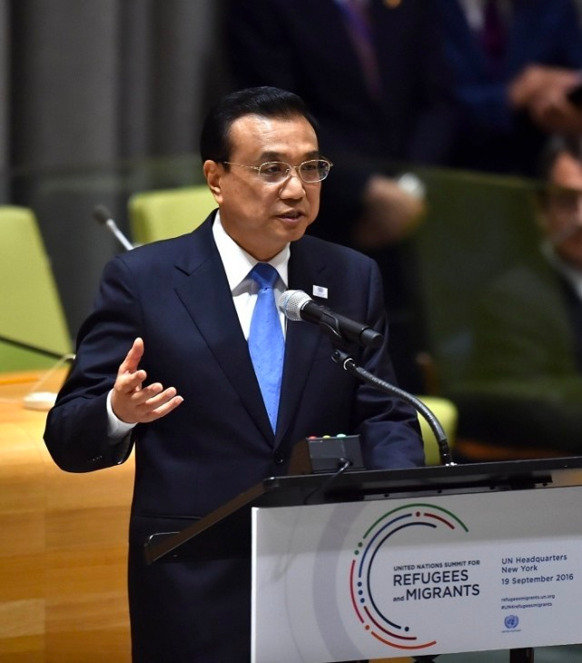

李克强联合国承诺援助难民：这是责任和道义的担当新闻

李克强总理首赴联合国，首场活动便是出席由联合国倡议举行的联大解决难移民流动问题高级别会议。
这是自联合国成立以来，首次召开的应对难移民问题的高级别会议。同时尤其值得注意的是，这也是中国领导人首次在此种国际场合阐述对于难移民问题的主张。总理的首场与联合国的首次，两者碰撞出怎样的火花?
人道主义的价值观，这是李克强主张的要旨。在联合国的讲台上，中国总理的视野超越国别和地域。他将难民和移民问题视为一场“拷问人类社会良知”的人道主义危机，因此郑重向国际社会发出呼吁：“每一个人的生命都是宝贵的，每一个人的尊严都应得到维护，人道主义精神必须弘扬。”中国传统政治伦理中有着人道主义的丰沛思想资源，李克强将其带到联合国讲台上，从而丰富了中国当代外交与政治的实践。
与此相应，在联合国这个庄严的讲台上，李克强代表中国宣布的3项举措，实打实地彰显了基于人道主义的国际政治理念。中国将这样做：在原有援助规模的基础上，向有关国家和国际组织提供1亿美元的人道主义援助;积极研究把中国-联合国和平与发展基金的部分资金用于支持发展中国家难民移民工作;积极探讨同有关国际机构和发展中国家开展三方合作。
怎么做，真金白银，某种意义上比怎么说更触及实质。然而这里面有一个厘清“责任观”的问题。中国作为联合国常任理事国，在难移民这一全球性议题上当然有义不容辞的责任。该出手时就出手，正如李克强在当天会议上所言，中国把人道主义援助视为“道义之举”。
同时，中国经济虽有了很大发展，但仍是发展中国家，愿意承担与自身能力相适应的责任。李克强在联合国所承诺的援助资金，是中国的量力而为，我们决不放空炮;所承诺的援助方式，比如使用和平与发展基金的部分资金、开展三方合作等，也是真正的“务实之举”。
更关键的是，李克强的“说”与“做”，在一个更高层面上实现了统一，那就是发展。战乱冲突、贫穷落后是难移民问题的主要根源，实现真正的包容性增长方为治本之策。中国的主张和举措，牢牢把握住了解决问题最关键点——长远和根本地看，出路还蕴藏在发展这一主题中。这也是李克强一直以来在国际外交舞台上所强调的，以发展弥合伤痕、促进平衡、共同向前。
在联合国的首场活动，阐述理念、承诺硬招，李克强总理在这个最高的国际场合，展示了中国“软实力”。
 60
60
12
评论